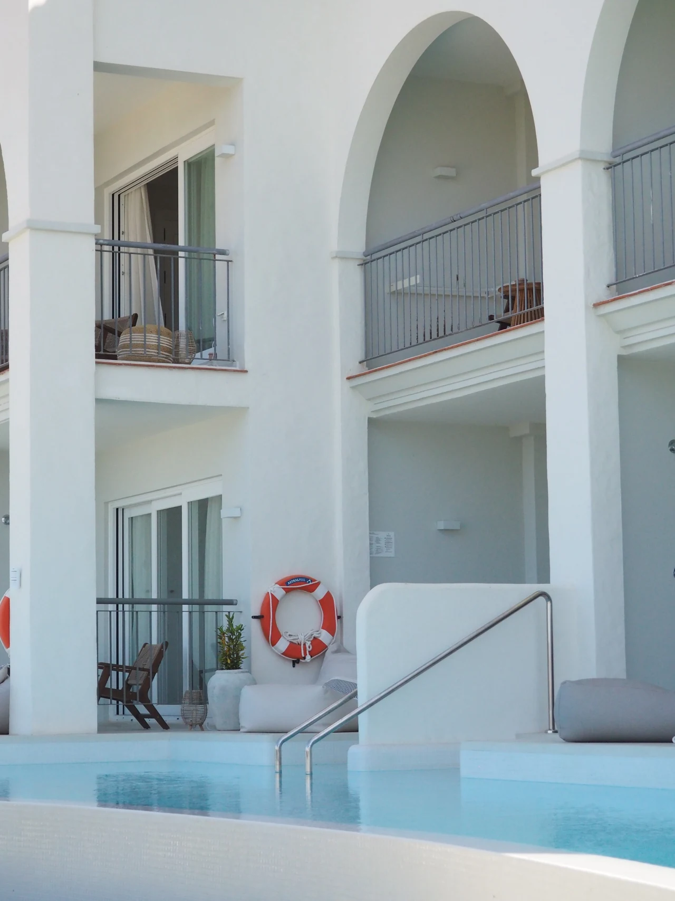
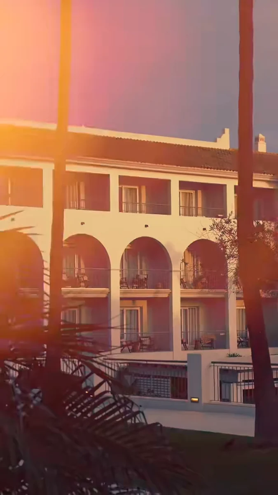
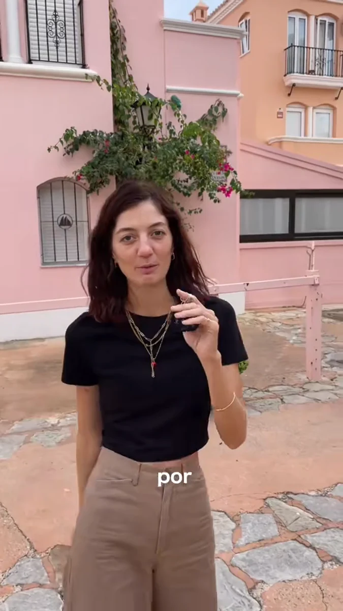

Hoteles & experiencias
Fotografía · Espacios · Lifestyle

Fotografía · Espacios · Lifestyle

Fotografía · Creación de contenido

Vídeo · Storytelling · Edición

Fotografía · Experiencias

TikTok · Storytelling · Edición

Fotografía · Luz · Instantes
Soy Araceli, fotógrafa y creadora de contenido. Transformo espacios, experiencias e ideas en imágenes que conectan, cuidando cada detalle, desde la luz hasta el ritmo del montaje.
Un poco más sobre mí ↗